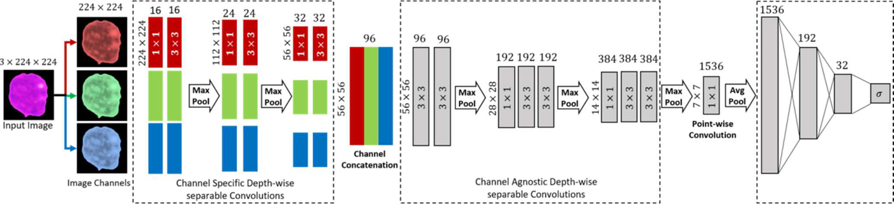

A small neural network that spots leukemia cells with a fifth of the parameters
Acute lymphoblastic leukemia is a cancer of the blood and bone marrow. Early screening matters, and we wanted a neural network that could tell leukemic cells from healthy ones in microscope images without needing a huge model. Our network does this with 7.5 million parameters, about a fifth of the size of the best published model we compared against.
The problem
In this disease the bone marrow makes too many immature white blood cells, called lymphoblasts, which crowd out healthy blood cells. It is the most common leukemia in children, about 25% of pediatric cancer diagnoses by the paper's figure. We used the ISBI 2019 C-NMC challenge dataset, which has segmented images of lymphoblasts: 10,661 training images from 73 patients and 1,867 test images from 28 patients.
Two things shape the task. Staining the cells introduces colour differences that have nothing to do with the cell itself, and we wanted the network to focus on the cell rather than the pigment. The second is size. Some published results reach high accuracy with a huge number of parameters and extra overhead, and the paper argues that a network has to be compact before it can be deployed in real life. A parameter is one learned number inside the network, so a count of parameters is a rough measure of size.
The idea
We split each colour image into its three channels, red, green and blue, and gave each its own small network, or column. Looking at one channel at a time pushes the network to attend to variations in intensity rather than the colour tint. The model has two phases. The first has three layers of channel-specific feature extraction. Then the three outputs are joined, and the second phase has three more layers that work on the combined features. For training we used standard data augmentation: linear transformations, added noise, and random changes in intensity and colour.
To keep the model small, we built it from depth-wise separable convolutions. In each block a 1 × 1 step first maps the features to more channels, and then one or more 3 × 3 steps handle the spatial pattern. Max pooling shrinks the image between blocks. In the last block a 7 × 7 average pooling turns the spatial features into a flat vector for a small classifier, a multi-layer perceptron.

What we found
The network reached 97.5% test accuracy, with precision 0.973 and recall 0.972. The state-of-the-art model we compared against combines DenseNet121, ResNet50 and MobileNet with a random forest, a second classifier that works on their outputs. It scored 98.8% with 38 million parameters, plus the overhead of that second classifier. Even against this top model our network loses only 1.3% in accuracy, with almost five times fewer parameters, and it needs no additional classifier.
The standard networks on their own scored lower. DenseNet121 (8.1 million parameters) reached 94.00%, ResNet50 (25.6 million) 93.50% and MobileNet (4.3 million) 94.20% (Table I). The paper concludes that, in its experiments, models of comparable size perform much worse than ours.
Results in more detail
Table I is the paper's whole comparison, and each row is one model. The first rows are standard networks used alone. Next come the same networks followed by a second classifier, either a random forest (RF) or XGBoost. Further down, two or three networks are combined first. The second column counts parameters. For models with a second classifier the paper adds a term such as O(NT), which stands for the order of complexity of that classifier. ACC is accuracy in per cent, and REC (recall) and PR (precision) are fractions of one. Our model is the last row.
| Method | Number of Params | ACC | REC | PR |
|---|---|---|---|---|
| DenseNet121 | 8.1 Million | 94.00 | 0.9330 | 0.9315 |
| ResNet50 | 25.6 Million | 93.50 | 0.9310 | 0.9270 |
| MobileNet | 4.3 Million | 94.20 | 0.9325 | 0.9340 |
| DenseNet121+RF | 8.1 Million + O(NT) | 95.00 | 0.9480 | 0.9415 |
| MobileNet+RF | 4.3 Million + O(NT) | 96.2 | 0.9575 | 0.9555 |
| MobileNet+XGBoost | 4.3 Million + O(NT log(T)) | 95.3 | 0.9435 | 0.9445 |
| DenseNet121+ResNet50+RF | 33.7 Million + O(NT) | 97.7 | 0.9700 | 0.9775 |
| ResNet50+MobileNet+RF | 29.9 Million + O(NT) | 97.3 | 0.9715 | 0.9695 |
| DenseNet121+MobileNet+RF | 12.4 Million + O(NT) | 98.5 | 0.9805 | 0.9840 |
| DenseNet121+MobileNet+ResNet50+RF | 38 Million + O(NT) | 98.8 | 0.9845 | 0.9870 |
| DenseNet121+ResNet50+XGBoost | 33.7 Million + O(NT log(T)) | 96.3 | 0.9610 | 0.9545 |
| DenseNet121+MobileNet+ XGBoost | 12.4 Million + O(NT log(T)) | 98.1 | 0.9780 | 0.9785 |
| DenseNet121+MobileNet+ResNet50+ XGBoost [6] | 38 Million + O(NT log(T)) | 98.2 | 0.9800 | 0.9785 |
| Proposed Approach | 7.5 Million | 97.5 | 0.9720 | 0.9730 |
Adding a random forest helps the single networks: MobileNet reaches 96.2% with one, against 94.20% alone (Table I). Combining networks helps more. DenseNet121 with ResNet50 and a random forest scores 97.7%, and DenseNet121 with MobileNet and a random forest scores 98.5% at 12.4 million parameters plus the forest (Table I). The largest combination, all three networks with a random forest, has the highest accuracy in the table, 98.8%, and the highest recall and precision, 0.9845 and 0.9870, at 38 million parameters. Our network has 97.5% accuracy, recall 0.9720 and precision 0.9730 at 7.5 million parameters, and needs no second classifier.
The introduction of the paper puts this next to earlier work on the same challenge data. Zakir and colleagues reported 91.1% accuracy on the C-NMC 2019 data with a network built around an efficient channel attention module. Prellberg and Kramer used a ResNeXt network with squeeze-and-excitation modules and report an F1-score of 88.91% on the test data. The paper's state-of-the-art reference is the hybrid design of Ahmed and colleagues, which fuses the features of several networks.
The paper adds a practical point about that reference design. Loading all three of its networks into the memory of a graphics card together would take a large amount of resources, and its top model carries the computing overhead of the second classifier as well.
Discussion
We set out to meet two aims together, and we think the results show that the model does. The first is to counter the artefacts that staining leaves in the images. By reading each colour channel separately, the network can attend to variations in intensity rather than colour fluctuations, which keeps its focus on the cell itself and away from inconsistencies in the pigment. The second aim is a small model. Depth-wise separable convolutions keep the parameter count at 7.5 million, and the paper argues that a network has to be compact before it can be deployed in real-life settings.
The test accuracy of 97.5% on the ISBI 2019 C-NMC data is comparable to the state of the art, and the model is much smaller than the 38-million-parameter ensemble. The price is a drop of 1.3% in accuracy against that top model. We regard it as a reasonable trade-off, and it is the reason we call the model more suitable for real-world deployment than the large ensembles.
There are limits. All results come from one dataset. The paper reports no experiments on images from other sources, so we cannot say how the network behaves elsewhere. The paper also names no specific future work.
Sources
The figures and tables listed here are taken from the paper cited at the top of this page; the numbers quoted in the text come from it too.
- Figures: Fig. 1
- Tables: Table I: parameter counts, accuracy, recall and precision of standard networks, networks with a second classifier, and the proposed model
Cite the paper
R Satpathi, S Das, M Laha, Swarnendu Ghosh (2023). Acute Lymphoblastic Leukemia Classification using Compact Channel Specific Multi-column CNNs. 8th International Conference on Computers and Devices for Communication (CODEC), IEEE.
@inproceedings{satpathi2023acute,
author = {Satpathi, R and Das, S and Laha, M and Ghosh, Swarnendu},
title = {Acute Lymphoblastic Leukemia Classification using Compact Channel Specific Multi-column {CNNs}},
booktitle = {8th International Conference on Computers and Devices for Communication (CODEC)},
year = {2023},
doi = {10.1109/codec60112.2023.10465891}
}